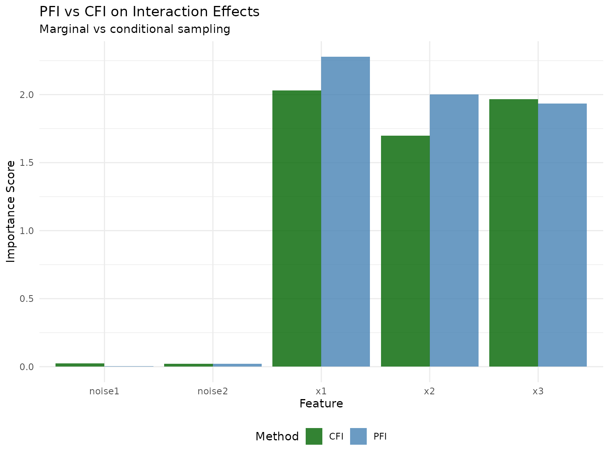
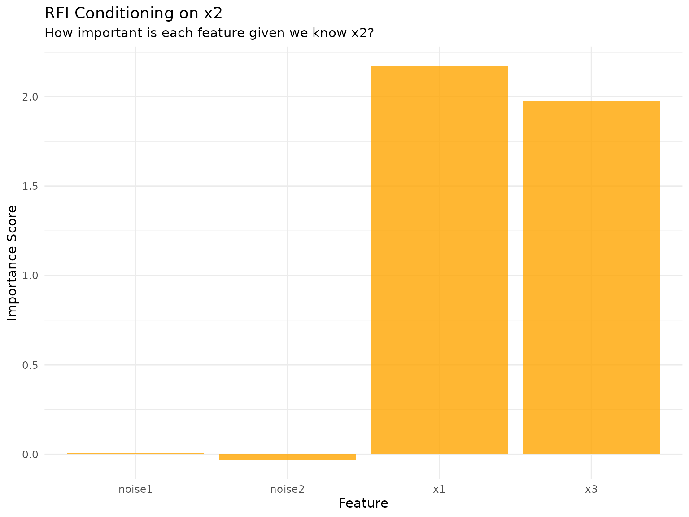
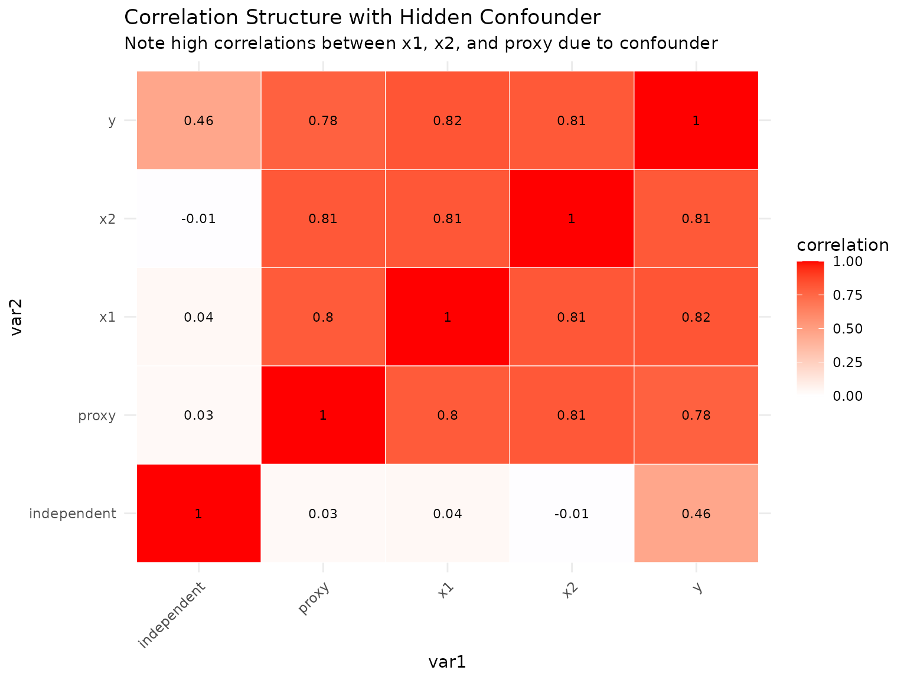
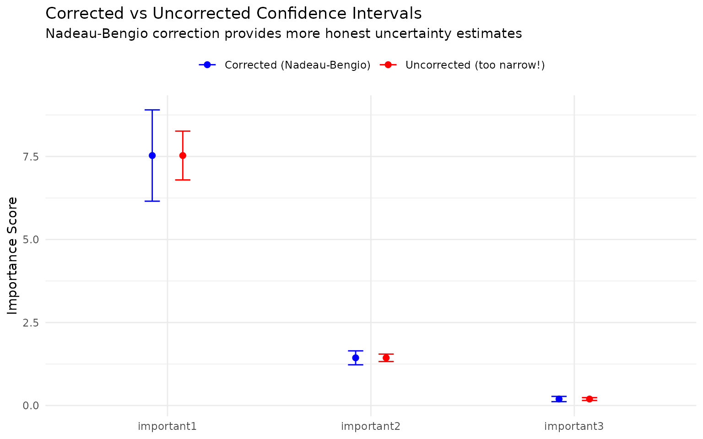

Perturbation-based Feature Importance Methods
Source:vignettes/articles/perturbation-importance.Rmd
perturbation-importance.Rmd
library(xplainfi)
library(mlr3)
library(mlr3learners)
library(data.table)
library(ggplot2)
library(DiagrammeR)This vignette demonstrates the three perturbation-based feature importance methods implemented in xplainfi:
- PFI (Permutation Feature Importance): Uses marginal sampling (simple permutation)
- CFI (Conditional Feature Importance): Uses conditional sampling via Adversarial Random Forests
- RFI (Relative Feature Importance): Uses conditional sampling on a user-specified subset of features
We’ll demonstrate these methods using three carefully designed scenarios that highlight their key differences.
# Common setup for all scenarios
learner <- lrn("regr.ranger", num.trees = 100)
resampling <- rsmp("cv", folds = 3)
measure <- msr("regr.mse")Scenario 1: Interaction Effects
This scenario demonstrates how marginal methods (PFI) can miss important interaction effects that conditional methods (CFI) capture:
# Generate interaction scenario
task_int <- sim_dgp_interactions(n = 1000)
data_int <- task_int$data()Causal Structure:
The key insight: x1 and x2 have NO direct effects - they affect y ONLY through their interaction (thick red arrow). However, PFI will still show them as important because permuting either feature destroys the crucial interaction term.
Analysis
Let’s analyze the interaction scenario where \(y = 2 \cdot x_1 \cdot x_2 + x_3 + \epsilon\). Note that x1 and x2 have NO main effects.
PFI on Interactions
pfi_int <- PFI$new(
task = task_int,
learner = learner,
measure = measure,
resampling = resampling,
n_repeats = 5
)
# Compute importance scores
pfi_int$compute()
pfi_int$importance(relation = "difference")
#> Key: <feature>
#> feature importance
#> <char> <num>
#> 1: noise1 0.003847893
#> 2: noise2 0.020582945
#> 3: x1 2.278858182
#> 4: x2 2.001683415
#> 5: x3 1.935324704Expected: x1 and x2 will show high importance with PFI because permuting either feature destroys the interaction term x1×x2, which is crucial for prediction. This demonstrates a key limitation of PFI with interactions.
CFI on Interactions
CFI preserves the joint distribution, which should better capture the interaction effect:
# Create ARF sampler for the interaction task
sampler_int = ConditionalARFSampler$new(task = task_int, finite_bounds = "local")
cfi_int <- CFI$new(
task = task_int,
learner = learner,
measure = measure,
resampling = resampling,
n_repeats = 5,
sampler = sampler_int
)
# Compute importance scores
cfi_int$compute()
cfi_int$importance(relation = "difference")
#> Key: <feature>
#> feature importance
#> <char> <num>
#> 1: noise1 0.02435625
#> 2: noise2 0.02051248
#> 3: x1 2.03202059
#> 4: x2 1.69961194
#> 5: x3 1.96597388Expected: CFI should show somewhat lower importance for x1 and x2 compared to PFI because it better preserves the interaction structure during conditional sampling, providing a more nuanced importance estimate.
RFI on Interactions: Targeted Conditional Questions
RFI’s unique strength is answering specific conditional questions. Let’s explore what happens when we condition on different features:
# RFI conditioning on x2: "How important is x1 given we know x2?"
rfi_int_x2 <- RFI$new(
task = task_int,
learner = learner,
measure = measure,
resampling = resampling,
conditioning_set = "x2", # Condition on x2
n_repeats = 5,
sampler = sampler_int
)
rfi_int_x2$compute()
# RFI conditioning on x1: "How important is x2 given we know x1?"
rfi_int_x1 <- RFI$new(
task = task_int,
learner = learner,
measure = measure,
resampling = resampling,
conditioning_set = "x1", # Condition on x1
n_repeats = 5,
sampler = sampler_int
)
rfi_int_x1$compute()RFI Results:
- x1 given x2: 2.170 (How important is x1 when we condition on x2)
-
x2 given x1: 1.579 (How important is x2 when we
condition on x1)
- x3 given x2: 1.979 (How important is x3 when we condition on x2)
Key insight: In the pure interaction case (y = 2·x1·x2 + x3), when we condition on one interacting feature, the other becomes extremely important because they only matter together. This demonstrates RFI’s power to answer targeted questions like “Given I already know x2, how much does x1 add?”
Comparing Methods on Interactions
Let’s compare how the methods handle the interaction:

RFI Conditional Summary: x1 given x2 has importance 2.170, x2 given x1 has importance 1.579, and x3 given x2 has importance 1.979. This shows how RFI reveals the conditional dependencies that pure marginal methods miss.
Key Insights: Interaction Effects
# Combine results and calculate ratios
comp_int <- rbindlist(list(
pfi_int$importance()[, .(feature, importance, method = "PFI")],
cfi_int$importance()[, .(feature, importance, method = "CFI")]
))
# Calculate the ratio of CFI to PFI importance for interacting features
int_ratio <- dcast(comp_int[feature %in% c("x1", "x2")], feature ~ method, value.var = "importance")
int_ratio[, cfi_pfi_ratio := CFI / PFI]
setnames(int_ratio, c("PFI", "CFI"), c("pfi_importance", "cfi_importance"))
int_ratio |>
knitr::kable(
digits = 3,
caption = "CFI vs PFI for Interacting Features"
)| feature | cfi_importance | pfi_importance | cfi_pfi_ratio |
|---|---|---|---|
| x1 | 2.032 | 2.279 | 0.892 |
| x2 | 1.700 | 2.002 | 0.849 |
Important insight about interaction effects: This example illustrates a crucial subtlety about PFI and interactions. While x1 and x2 have no main effects, PFI still correctly identifies them as important because permuting either feature destroys the interaction term x1×x2, which is crucial for prediction. The key limitation is that PFI cannot distinguish between main effects and interaction effects - it measures total contribution including through interactions.
Scenario 2: Confounding
This scenario shows how hidden confounders affect importance estimates and how conditioning can help:
# Generate confounding scenario
task_conf <- sim_dgp_confounded(n = 1000)
data_conf <- task_conf$data()Causal Structure:
The red arrows show the confounding paths: the
hidden confounder creates spurious correlations between x1, proxy, and
y. The blue arrows show true direct causal effects.
Note that independent is truly independent (no confounding)
while proxy provides a noisy measurement of the
confounder.
In the observable confounder scenario (used later), the confounder H would be included as a feature in the dataset, allowing direct conditioning rather than relying on the noisy proxy.

Key insight: The hidden confounder creates spurious correlations between x1 and y (red paths), making x1 appear more important than its true direct effect. RFI conditioning on the proxy (which measures the confounder) should help isolate the true direct effect (blue path).
Analysis
Now let’s analyze the confounding scenario where a hidden confounder affects both features and the outcome.
PFI on Confounded Data
pfi_conf <- PFI$new(
task = task_conf,
learner = learner,
measure = measure,
resampling = resampling,
n_repeats = 5
)
pfi_conf$compute()
pfi_conf$importance()
#> Key: <feature>
#> feature importance
#> <char> <num>
#> 1: independent 1.571777
#> 2: proxy 1.289117
#> 3: x1 3.586063RFI Conditioning on Proxy
RFI can condition on the proxy to help isolate direct effects:
# Create sampler for confounding task
sampler_conf = ConditionalARFSampler$new(
task = task_conf,
verbose = FALSE,
finite_bounds = "local"
)
# RFI conditioning on the proxy
rfi_conf <- RFI$new(
task = task_conf,
learner = learner,
measure = measure,
resampling = resampling,
conditioning_set = "proxy", # Condition on proxy to reduce confounding
n_repeats = 5,
sampler = sampler_conf
)
rfi_conf$compute()
rfi_conf$importance()
#> Key: <feature>
#> feature importance
#> <char> <num>
#> 1: independent 1.622194
#> 2: proxy 0.000000
#> 3: x1 1.749965Also trying CFI for comparison
cfi_conf <- CFI$new(
task = task_conf,
learner = learner,
measure = measure,
resampling = resampling,
n_repeats = 5,
sampler = sampler_conf
)
#> Warning: ! Provided sampler has a pre-configured `conditioning_set`.
#> ℹ To calculate <CFI> correctly, `conditioning_set` will be reset such that
#> sampling is performed conditionally on all remaining features.
cfi_conf$compute()
cfi_conf$importance()
#> Key: <feature>
#> feature importance
#> <char> <num>
#> 1: independent 1.5586791
#> 2: proxy 0.2084425
#> 3: x1 1.6674019Observable Confounder Scenario
In many real-world situations, confounders are actually observable (e.g., demographics, baseline characteristics). Let’s explore how RFI performs when we can condition directly on the true confounder:
# Generate scenario where confounder is observable
task_conf_obs <- sim_dgp_confounded(n = 1000, hidden = FALSE)
# Now we can condition directly on the true confounder
sampler_conf_obs = ConditionalARFSampler$new(
task = task_conf_obs,
verbose = FALSE,
finite_bounds = "local"
)
# RFI conditioning on the true confounder (not just proxy)
rfi_conf_obs <- RFI$new(
task = task_conf_obs,
learner = learner,
measure = measure,
resampling = resampling,
conditioning_set = "confounder", # Condition on true confounder
n_repeats = 5,
sampler = sampler_conf_obs
)
rfi_conf_obs$compute()
rfi_conf_obs$importance()
#> Key: <feature>
#> feature importance
#> <char> <num>
#> 1: confounder 0.000000000
#> 2: independent 1.539426725
#> 3: proxy -0.002651167
#> 4: x1 0.549141497
# Compare with PFI on the same data
pfi_conf_obs <- PFI$new(
task = task_conf_obs,
learner = learner,
measure = measure,
resampling = resampling,
n_repeats = 5
)
pfi_conf_obs$compute()
pfi_conf_obs$importance()
#> Key: <feature>
#> feature importance
#> <char> <num>
#> 1: confounder 1.62325668
#> 2: independent 1.62540310
#> 3: proxy 0.05759922
#> 4: x1 2.18558022Key Results:
- x1 importance: PFI = 2.186, RFI|confounder = 0.549
- independent importance: PFI = 1.625, RFI|confounder = 1.539
Insight: When conditioning on the true confounder, RFI should show reduced importance for x1 (since much of its apparent importance was due to confounding) while independent maintains its importance (since it’s truly causally related to y).
Key Insights: Confounding Effects
# Show how conditioning affects importance estimates
conf_wide <- dcast(comp_conf_long, feature ~ method, value.var = "importance")
conf_summary <- conf_wide[, .(
feature,
pfi_importance = round(PFI, 3),
cfi_importance = round(CFI, 3),
rfi_proxy_importance = round(RFI, 3),
pfi_rfi_diff = round(PFI - RFI, 3)
)]
conf_summary |>
knitr::kable(
caption = "Effect of Conditioning on Proxy in Confounded Scenario"
)| feature | pfi_importance | cfi_importance | rfi_proxy_importance | pfi_rfi_diff |
|---|---|---|---|---|
| independent | 1.572 | 1.559 | 1.622 | -0.050 |
| proxy | 1.289 | 0.208 | 0.000 | 1.289 |
| x1 | 3.586 | 1.667 | 1.750 | 1.836 |
In the confounding scenario, we observed:
PFI shows confounded effects: Without accounting for confounders, PFI overestimates the importance of x1 due to its spurious correlation with y through the hidden confounder.
RFI conditioning on proxy reduces bias: By conditioning on the proxy (noisy measurement of the confounder), RFI can partially isolate direct effects, though some confounding remains due to measurement error.
RFI conditioning on true confounder removes bias: When the confounder is observable and we can condition directly on it, RFI dramatically reduces the apparent importance of x1, revealing its true direct effect.
CFI partially accounts for confounding: Through its conditional sampling, CFI captures some of the confounding structure but cannot target specific confounders like RFI can.
Scenario 3: Correlated Features
This scenario demonstrates the fundamental difference between marginal and conditional methods when features are highly correlated:
# Generate correlated features scenario
task_cor <- sim_dgp_correlated(n = 1000)
data_cor <- task_cor$data()Causal Structure:
Key feature: x1 and x2 are highly correlated (r = 0.9 from MVN) but only x1 has a causal effect on y. x2 is a spurious predictor - correlated with the causal feature but not causal itself.
Analysis
Let’s analyze how different methods handle highly correlated features:
PFI on Correlated Features
pfi_cor <- PFI$new(
task = task_cor,
learner = learner,
measure = measure,
resampling = resampling,
n_repeats = 5
)
pfi_cor$compute()
pfi_cor$importance()
#> Key: <feature>
#> feature importance
#> <char> <num>
#> 1: x1 5.156513945
#> 2: x2 0.521717907
#> 3: x3 1.683942121
#> 4: x4 -0.001536471Expected: PFI will show high importance for BOTH x1 and x2, even though only x1 has a true causal effect. This happens because x2 is highly correlated with x1, so permuting x2 destroys predictive information about x1.
CFI on Correlated Features
# Create ARF sampler for correlated task
sampler_cor = ConditionalARFSampler$new(task = task_cor, finite_bounds = "local")
cfi_cor <- CFI$new(
task = task_cor,
learner = learner,
measure = measure,
resampling = resampling,
n_repeats = 5,
sampler = sampler_cor
)
cfi_cor$compute()
cfi_cor$importance()
#> Key: <feature>
#> feature importance
#> <char> <num>
#> 1: x1 2.040455912
#> 2: x2 0.101151870
#> 3: x3 1.638895975
#> 4: x4 -0.001503762Expected: CFI should show high importance for x1 (the true causal feature) but near-zero importance for x2 (the spurious correlated feature) because conditional sampling preserves the correlation structure and can distinguish between causal and spurious predictors.
RFI to Answer Conditional Questions
# RFI conditioning on x1: "How important is x2 given we know x1?"
rfi_cor_x1 <- RFI$new(
task = task_cor,
learner = learner,
measure = measure,
resampling = resampling,
conditioning_set = "x1",
n_repeats = 5,
sampler = sampler_cor
)
rfi_cor_x1$compute()
# RFI conditioning on x2: "How important is x1 given we know x2?"
rfi_cor_x2 <- RFI$new(
task = task_cor,
learner = learner,
measure = measure,
resampling = resampling,
conditioning_set = "x2",
n_repeats = 5,
sampler = sampler_cor
)
rfi_cor_x2$compute()RFI Results: - x2 given x1: 0.083 (How much does x2 add when we already know x1?) - x1 given x2: 1.962 (How much does x1 add when we already know x2?)
Expected: When conditioning on x1, the importance of x2 should be near zero (and vice versa) because they’re almost identical - knowing one tells you almost everything about the other.
Key Insights: Correlated Features
cor_ratio |>
knitr::kable(
digits = 3,
caption = "CFI vs PFI for Highly Correlated Features"
)| feature | CFI | PFI | cfi_pfi_ratio |
|---|---|---|---|
| x1 | 2.040 | 5.157 | 0.396 |
| x2 | 0.101 | 0.522 | 0.194 |
In the correlated features scenario:
PFI overestimates importance of spurious features: PFI assigns high importance to BOTH x1 (causal) and x2 (spurious) because they’re highly correlated. Permuting x2 destroys information about x1, making x2 appear important even though it has no causal effect.
CFI correctly identifies causal features: By preserving the correlation structure during conditional sampling, CFI can distinguish between x1 (truly causal) and x2 (merely correlated), assigning high importance only to x1.
RFI reveals redundancy: When conditioning on x1, the additional importance of x2 is near zero (and vice versa), correctly identifying their redundancy for prediction.
Practical implication: PFI would mislead you to think both features are important. CFI correctly shows that only x1 is truly important, while x2 is just along for the ride due to correlation.
Scenario 4: Independent Features (Baseline)
To provide a baseline comparison, let’s examine a scenario where all feature importance methods should produce similar results:
# Generate independent features scenario
task_ind <- sim_dgp_independent(n = 1000)
data_ind <- task_ind$data()Causal Structure:
This is the simplest scenario: all features are independent, there are no interactions, and no confounding. Each feature has only a direct effect on y (or no effect in the case of noise).
Running All Methods on Independent Features
First PFI:
# PFI
pfi_ind <- PFI$new(
task = task_ind,
learner = learner,
measure = measure,
resampling = resampling,
n_repeats = 5
)
pfi_ind$compute()Now CFI with the ARF sampler:
sampler_ind = ConditionalARFSampler$new(task = task_ind, finite_bounds = "local")
cfi_ind <- CFI$new(
task = task_ind,
learner = learner,
measure = measure,
resampling = resampling,
n_repeats = 5,
sampler = sampler_ind
)
cfi_ind$compute()RFI with empty conditioning set, basically equivalent to PFI with a different sampler:
rfi_ind <- RFI$new(
task = task_ind,
learner = learner,
measure = measure,
resampling = resampling,
conditioning_set = character(0), # Empty set
n_repeats = 5,
sampler = sampler_ind
)
rfi_ind$compute()And now we visualize:

Agreement Between Methods
# Calculate coefficient of variation for each feature across methods
comp_ind_wide <- dcast(comp_ind_long, feature ~ method, value.var = "importance")
comp_ind_wide[,
`:=`(
mean_importance = rowMeans(.SD),
sd_importance = apply(.SD, 1, sd),
cv = apply(.SD, 1, sd) / rowMeans(.SD)
),
.SDcols = c("PFI", "CFI", "RFI")
]
comp_ind_wide[, .(
feature,
mean_importance = round(mean_importance, 3),
cv = round(cv, 3),
agreement = ifelse(cv < 0.1, "High", ifelse(cv < 0.2, "Moderate", "Low"))
)] |>
knitr::kable(
caption = "Method Agreement on Independent Features",
col.names = c("Feature", "Mean Importance", "Coef. of Variation", "Agreement Level")
)| Feature | Mean Importance | Coef. of Variation | Agreement Level |
|---|---|---|---|
| important1 | 6.362 | 0.055 | High |
| important2 | 1.759 | 0.288 | Low |
| important3 | 0.292 | 0.073 | High |
| unimportant1 | -0.003 | -1.190 | High |
| unimportant2 | -0.003 | -0.301 | High |
Key insight: With independent features and no complex relationships, all three methods (PFI, CFI, RFI) produce very similar importance estimates. This confirms that the differences we observe in Scenarios 1 and 2 are truly due to interactions and confounding, not artifacts of the methods themselves.
Key Insights: Independent Features
In the baseline scenario with independent features:
All methods agree: PFI, CFI, and RFI produce nearly identical importance estimates when features are truly independent.
Validates methodology: The agreement between methods confirms that differences in other scenarios are due to data structure, not method artifacts.
Noise correctly identified: All methods correctly assign near-zero importance to the noise features.
Variance Estimation and Confidence Intervals
When using resampling, xplainfi can compute confidence intervals for importance scores to quantify uncertainty. However, standard variance calculations produce confidence intervals that are too narrow when observations appear in multiple resampling folds.
Example: Corrected vs Uncorrected Confidence Intervals
# Demonstrate variance correction with subsampling
task_var <- sim_dgp_independent(n = 300)
pfi_var <- PFI$new(
task = task_var,
learner = lrn("regr.ranger", num.trees = 100),
measure = msr("regr.mse"),
resampling = rsmp("subsampling", repeats = 10, ratio = 0.8),
n_repeats = 5
)
pfi_var$compute()
# Compare variance methods
imp_raw <- pfi_var$importance(ci_method = "raw") # Uncorrected (too narrow!)
imp_corrected <- pfi_var$importance(ci_method = "nadeau_bengio") # Corrected
# Show the difference for important features
imp_raw[grepl("^important", feature), .(feature, importance, conf_lower, conf_upper)]
#> Key: <feature>
#> feature importance conf_lower conf_upper
#> <char> <num> <num> <num>
#> 1: important1 7.5285208 6.7936479 8.2633937
#> 2: important2 1.4363782 1.3240233 1.5487331
#> 3: important3 0.1954965 0.1533125 0.2376805
imp_corrected[grepl("^important", feature), .(feature, importance, conf_lower, conf_upper)]
#> Key: <feature>
#> feature importance conf_lower conf_upper
#> <char> <num> <num> <num>
#> 1: important1 7.5285208 6.1536995 8.9033422
#> 2: important2 1.4363782 1.2261814 1.6465750
#> 3: important3 0.1954965 0.1165775 0.2744156
Practical Recommendations
- Use
ci_method = "nadeau_bengio"when using bootstrap or subsampling for improved (yet still flawed) confidence intervals - The default
ci_method = "none"returns only point estimates without uncertainty - Never use
ci_method = "raw"for actual results, the uncorrected intervals are misleadingly narrow
Key Takeaways
Through these four scenarios, we’ve demonstrated:
-
Method choice matters:
- PFI is simple and fast but can miss interaction effects, underestimate importance of correlated features, and be affected by confounding
- CFI captures feature dependencies and interactions through conditional sampling, correctly handling correlated features
- RFI allows targeted conditioning to isolate specific relationships and reveal redundancy
-
When to use each method:
- Use PFI when features are believed to be independent (as in Scenario 4) and you want a quick baseline importance ranking
- Use CFI when you suspect feature interactions, correlations, or dependencies (as in Scenarios 1 & 3) and want a sophisticated analysis that respects feature relationships
- Use RFI when you have specific conditional questions: “How important is feature X given I already know feature Y?” (as in Scenarios 1, 2 & 3). Essential for feature selection and understanding incremental value.
-
Practical considerations:
- All methods benefit from cross-validation and multiple permutation iterations for stability
- ARF-based conditional sampling (used in CFI/RFI) is more computationally intensive than marginal sampling
- The choice of conditioning set in RFI requires domain knowledge
Further Reading
For more details on these methods and their theoretical foundations, see:
- Breiman (2001) for the original PFI formulation
- Strobl et al. (2008) for limitations of PFI with correlated
features
- Watson & Wright (2021) for conditional sampling with ARF
- König et al. (2021) for relative feature importance
- Ewald et al. (2024) for a comprehensive review of feature importance methods